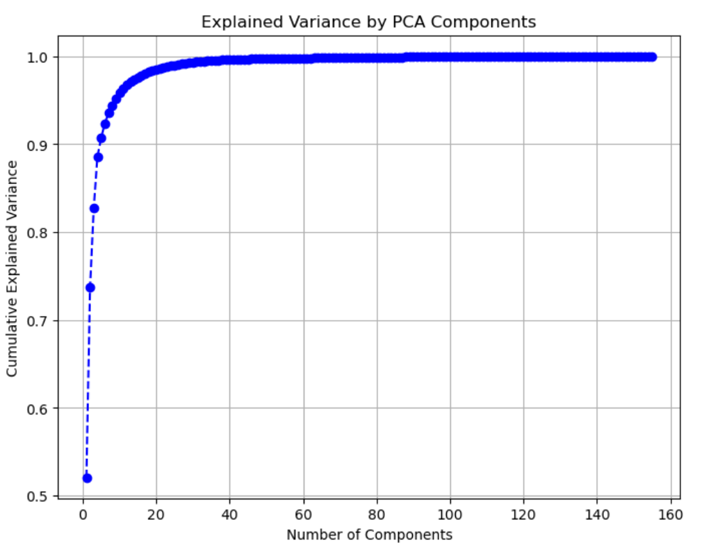
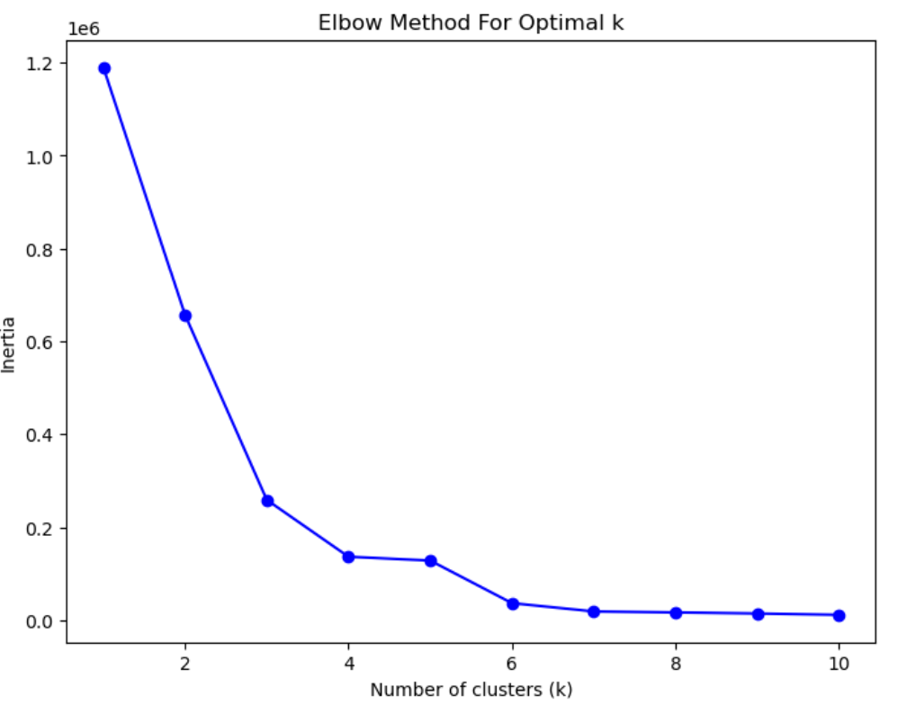
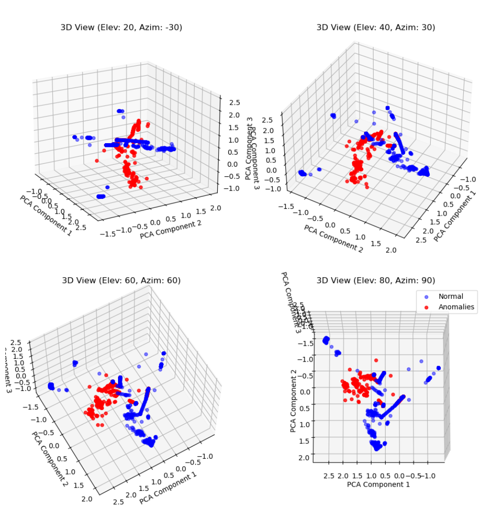
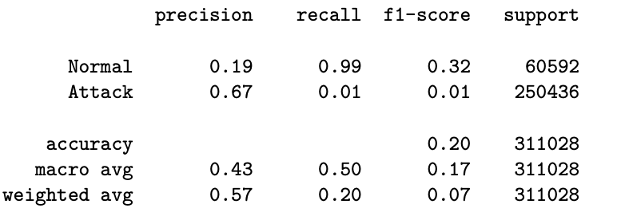

Frankie Noguera
Aspiring Data Scientist
Senior at Gordon College
Phone Number: +1(475)299-4890
Email: frankienoguera@outlook.com
Projects
Here are some of the projects I have worked on using SQL, Python, and R programming
Project 1: UFC Relational Database
Built a relational database on fighter stats, country of origin stats, and UFC events stats
Project 2: Natural Language Processing on Presidential Inauguration Speech
My project applied NLP to analyze President Trump's inaugural speech (2025), focusing on sentiment analysis, word frequency, and thematic trends. Using techniques like tokenization, lemmatization, and lexicon-based sentiment scoring, I quantified the speech’s emotional tone and key themes. Additionally, I examined the most frequently used words and patterns to uncover the speech’s underlying message and rhetoric. This project demonstrates how NLP can provide data-driven insights into political communication.


- Project 3: Uncovering Anomalies in Network Traffic with Machine Learning
In this project, I applied unsupervised machine learning to detect anomalies in network traffic data. Using K-Means clustering and PCA, I aimed to identify suspicious activity without relying on labeled data, a crucial approach for real-world cybersecurity challenges.
What I did:
Explored the Data: Analyzed a dataset containing 155 features, identifying a label column for evaluation (but not for training).
Dimensionality Reduction with PCA: Reduced 155 features to 5 key components while preserving 91% of the original information.
Clustering with K-Means: Determined 4 clusters using the elbow method and validated them with a silhouette score of 0.8 (indicating strong cluster formation).
Anomaly Detection: Flagged data points far from cluster centers as anomalies, setting a threshold at the 95th percentile.
Model Evaluation: Compared detected anomalies with actual labels using a confusion matrix, precision, recall, and F1-score   